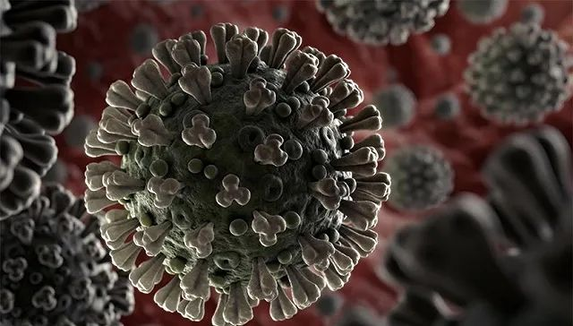

新冠病毒产生149个突变和2个亚型，需要担心传染性和毒性改变吗？
原文链接 备份链接 3 月 3 日，《国家科学评论》（_NSR_）发表题为《关于 SARS-CoV-2 的起源和持续进化》研究称，新冠病毒已经演化出 L 和 S 两个亚型，并且这两种亚型的传播能力、致病严重程度或许存在明显区别。 研究发布 …

图片来源：WHO
记者：潘金花
“
专家指出，疫苗在研发时一般都以病毒“最持久”的部分为依据。因此，一款疫苗仍很有可能对多种亚型的病毒起效。
”
在全球科学界争分夺秒与新冠病毒“赛跑”的过程中，新的挑战正在不断出现。
近日，已有多国学者指出，新冠病毒正在发生变异，这或将影响到诊断工具、药物和疫苗的研发。
但也有专家表示，目前病毒还未出现明显变异，仅发生了在RNA病毒身上常见的“小突变”，同样的疫苗仍很有可能对多种亚型的病毒起效，不必过于恐慌。
3月3日，中国科学院主办的《国家科学评论》发表《关于SARS-CoV-2的起源和持续进化》一文。文章通过对迄今为止最大规模的103个新冠病毒全基因组分子进化分析发现，新冠病毒已于近期产生了149个突变点，并演化出了L和S两个亚型（注：SARS-CoV-2为此次疫情中的新型冠状病毒，COVID-19为感染病毒导致的新冠肺炎）。
据界面新闻此前报道，文章作者发现，这两个亚型在地域分布以及人群中的占比相距甚远，推测其传播能力、致病严重程度可能存在较大区别。
其中，S亚型与蝙蝠来源的冠状病毒在进化树上更接近，是相对更古老的版本，L亚型则相对年轻。但从占比上看，L亚型（70%）比S亚型（30%）更为普遍，且L亚型病毒株比S亚型携带了相对较多的新生突变，推测其病毒传播能力更强、在人体内复制更快。
文章发现，绝大多处患者体内提取的病毒株表明，其只感染了L型或S型中的一个病毒亚型。L亚型在武汉疫情爆发的早期阶段更为普遍，之后由于强力的人为干预，其发生频率在1月初后有所下降。
不过文章也指出，一位确诊前有过武汉旅行史的美国患者分离的病毒株，预示其可能发生了同时感染L型和S型病毒的情况，但目前还无法排除新突变型的可能性，仍需扩大样本量，以验证上述结论或推测。
与此类似，在巴西及英国科学家2月29日合作发表于病毒学网站Virologic.org的《南美洲首份新冠病毒报告》一文中，也提到了新冠病毒在传播过程中已出现变异。
截至4日，巴西已累计确诊3例新冠肺炎病例，还有1例首次核酸检测呈阳性待复查，四人均有意大利旅行史。研究人员在采集了前2例确诊病例的病毒基因后发现，其中一人的病毒基因组与中国公布的“Hu-1参考菌株”相比有3个突变点。
据巴西圣保罗研究基金会下属通讯社Agência FAPESP 4日报道，文章作者之一、圣保罗大学热带医学研究所所长萨比诺（Ester Sabino）表示，这名患者的病毒基因与从德国患者身上提取的菌株更接近，另外一人的则与在英国发现的病毒更相似。
萨比诺说，从欧洲国家发生内部传播的层面上讲，这意味着新冠病毒所引发的流行病正在欧洲“逐渐成熟”。上述文章在3月3日的更新中也提及，由于从巴西确诊病例身上提取的病毒基因存在多个突变点，意大利北部所爆发的疫情可能是多次引入的结果，而非来自单一来源。
在澳大利亚，同样有研究人员指出，新冠病毒正在发生变异。据《印度教徒报》3日报道，澳大利亚联邦科学与工业研究组织（CSIRO）的研究人员在分析了115条已公布的基因组序列后认为，病毒正在发生变异，或将给今后诊断工具、药物及疫苗的研发和试验带来显著影响。
武汉大学医学部病毒学研究所教授杨占秋4日也向《环球时报》表示，新冠病毒发生的突变，对疫苗设计和疫情诊断都具有很大意义，如果不同病例身上的病毒基因序列有别，那么同样的诊断工具和疫苗可能就无法起效，在设计上必须更加精准。
此外，发生变异的新冠病毒在致病特点上也会有所不同。杨占秋说，比如在中国的病毒的致死率是2%，在欧洲的病毒则可能会导致更高的死亡率。
3月4日，香港还出现了一只宠物狗被检出新冠病毒弱阳性的案例。香港渔农自然护理署（渔护署）当天表示，有关结果显示，该宠物狗已低程度感染有关病毒，很可能是由人类传染。
据悉，该宠物狗的主人此前就是新冠病毒感染者。不过，目前还未有证据显示，宠物会感染或传播新冠病毒，该宠物狗也没有任何相关病征，这提示病毒并未在狗身体中大量复制引发疾病。
据了解，就其他冠状病毒而言，SARS-CoV曾发生突变，变得更易感染人类，MERS-CoV则未发生变异。但要注意的是，新冠病毒发生变异，并不代表病毒已实现“进化”。
这首先是因为，相较于全球已有的新冠肺炎确诊病例人数来说，目前仅有130余条基因组序列被分析和上传，仍缺乏大规模的病毒基因序列分析，需要对更多样本以及患者的发病情况展开分析，才能得出更可靠的结论。
此外，突变本来就是病毒生命周期的一个自然组成部分，像新冠病毒这样的单链RNA病毒，在自我复制的过程会更容易变异。
耶鲁大学及悉尼大学的研究人员在2月18日于《自然—微生物学》上刊发的一篇评论文章中指出，突变可使病毒毒性增强，也可使其减弱，而病毒的毒性和传播方式等是由多个基因控制，即需要多个突变才能进化，任何关于突变后果的说法都需要实验和流行病学证据，不应太过恐慌。
不过，从流行病防控方面考虑，病毒变异的可能性越大、速度越快，就越难防控，疫苗研发也会相对更难。以流感病毒为例，由于其病毒序列常常突变，疫苗制造商每年都要根据变种生产新的疫苗。
对此，世卫组织此前主管传染病事务的助理总干事、现伦敦卫生与热带医学院（LSHTM）传染病流行病学教授大卫·海曼（David Heymann）表示，目前来看，新冠病毒仍相对稳定，仅出现了一些“小突变”，这意味着各国研发的疫苗仍有很大可能起效。
此前，中国科学院西双版纳热带植物园、南方医科大学以及世卫组织新冠肺炎联合专家考察组均曾表示，新冠病毒尚未发现明显变异。
全球共享禽流感数据倡议组织（GISAID）相关研究亦显示，新冠病毒的S蛋白在与人体ACE2蛋白结合的地方尚未发生突变，说明病毒的基本特性还没有改变。
海曼教授指出，研究人员在研发疫苗时，一般都以病毒“最持久（most sustained）”的部分为依据，因此，一款疫苗仍很有可能对多种亚型的新冠病毒起效。他补充说，“科学家如今仍在了解病毒，但就目前来看，其源头仍能追溯至湖北省最初出现的毒株”。
未经授权 禁止转载

原文链接 备份链接 3 月 3 日，《国家科学评论》（_NSR_）发表题为《关于 SARS-CoV-2 的起源和持续进化》研究称，新冠病毒已经演化出 L 和 S 两个亚型，并且这两种亚型的传播能力、致病严重程度或许存在明显区别。 研究发布 …
原文链接 备份链接 澎湃新闻记者 张若婷 贺梨萍 新冠病毒是否已经发生突变？如何突变？这是目前学界研究的焦点之一。 中国科研团队最新发现显示：新冠病毒已于近期产生了149个突变点，并演化出了两个亚型，分别是L亚型和S亚型。 研究发现，在地 …
原文链接 备份链接 图片来源：海洛创意 记者：金淼 “ 作者发现新冠病毒已经演化出L和S两个亚型，这两个亚型在地域分布以及人群中的比例相距甚远。 ” 3月3日，《国家科学评论》发表《关于SARS-CoV-2的起源和持续进化》一文。论文通讯 …
原文链接 备份链接 科研界正展开一场与病毒的赛跑，希望在最短时间内找到特效药物。根据中国临床试验注册中心统计，截至2月27日凌晨，已有271项新冠肺炎（COVID-19）相关临床试验已经或即将开展，除被推荐可能有效的抗病毒药物外，各类中 …
原文链接 备份链接 新冠病毒一直在变异，研究者发现截至目前仍较缓和。但鉴于当前疫情的严峻形势，共享病毒相关的数据对控疫更有帮助。 本文 4173字，阅读全文约7分钟 图/pixabay 文/《财经》记者 孙爱民 编辑/王小 新冠病毒肺炎疫 …